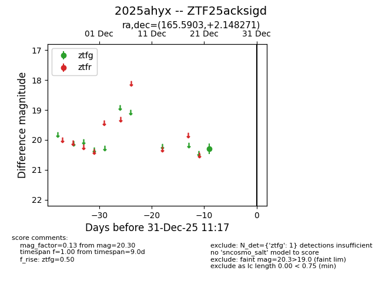
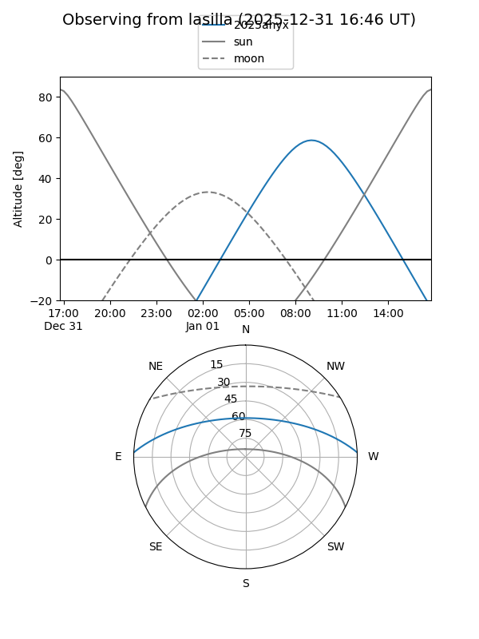
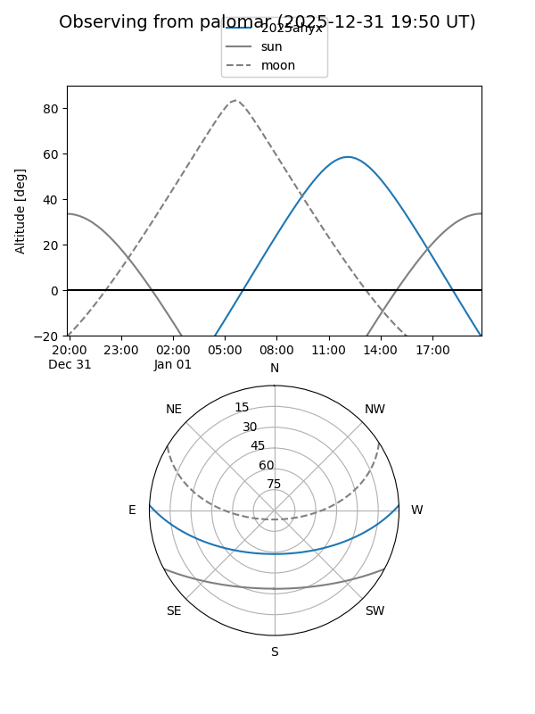

2025ahyx
Target 2025ahyx at 2025-12-22 20:48
Aliases and brokers:
FINK: fink-portal.org/ZTF25acksigd
Lasair: lasair-ztf.lsst.ac.uk/objects/ZTF25acksigd
ALeRCE: alerce.online/object/ZTF25acksigd
TNS: wis-tns.org/object/2025ahyx
YSE: ziggy.ucolick.org/yse/transient_detail/2025ahyx
alt names
ZTF25acksigd (ztf,fink_ztf)
2025ahyx (tns,yse)
Coordinates:
equatorial (ra, dec) = 165.5903,+2.14827
equatorial (HMS+DMS) = 11:02:21.67,+02:08:53.78
galactic (l, b) = (252.0000,+53.86355)
Flags:
Photometry:
last ztfg=20.30
1 ztfg detections
Lightcurve

Visibility


Additional plots